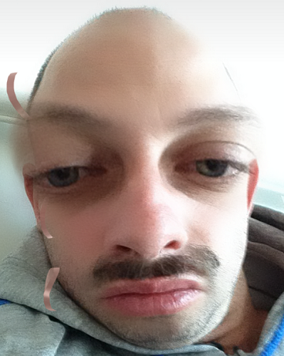

Conclusion
Je voudrais commencer cette conclusion en remerciant Florian et Olivier pour le temps consacrer et la passion qu’ils m’ont chacun communiqués à travers leurs interviews respectives ! Merci à vous deux !
Est-ce que ça confirme mon envie de continuer sur cette voix ? De devenir Webdev ? La réponse est un grand oui. Tous les deux m’ont montré quelques choses qui confirme mon ressenti sur le métier malgré mon peu d’expérience. C’est l’amour de la logique, le côté gratifiant quand on résout les problèmes, considérer les difficultés comme des puzzles, prendre le travail comme un jeu, considérer les difficultés comme des puzzles… Ce n’est pas juste une activité lucrative, c’est quelque chose pour lequel on a envie de se lever le matin !
C’est vrai que Olivier m’a décrit un côté plus positif du travail et qui fait plus rêvé que Florian. Mais ce 2e m’a montré, par les difficultés qu’il a rencontrées, comment mieux faire et éviter certains pièges. Car comme lui, je ne sais pas me vendre. Je viens de l’horeca, j’ai toujours trouvé du travail par le bouche à oreille, je n’ai pas fait de CV depuis 2012… Alors je sais que, dès maintenant, je dois travailler là-dessus, me faire un beau CV, un porte folio et si possible des contacts dans le métier… Car je n’y connais pas grand monde pour l’instant.
Et puis, continuer à travailler mon code ! C’est ici que je remercie
le CF2M et son équipe pour l’opportunité qui nous est offerte à tous
dans cette classe ! Dédicace aux autres stagiaires, chacun apporte son
aide quand il peut et avec ses moyens, c’est beau. En espérant qu’on
continuera tous sur cette voix avec le sourire et la prospérité.
« Le loup qui mange avec l’appétit de l’âme nourrit l’esprit du cœur
»
-Nietzsche